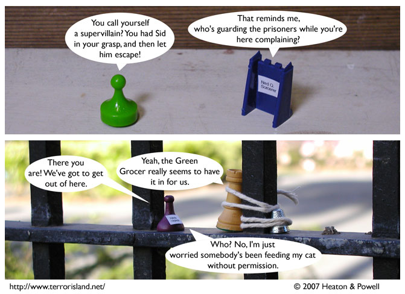

Strip #143
— Friday, May 11, 2007
Sid is a jealous catowner
Notes, Thoughts, &c.
Ben’s Notes
My regular camera is in for repairs at the moment, so this strip was made using a backup one. As you can see, it only takes extra-wide pictures, but we should be back to the normal shape by Monday.
Lewis’s Notes
Actually, Ben’s backup camera can take extra-tall pictures too. He just doesn’t know how to rotate it properly.
I wrote Lewis’s comments today. -Ben